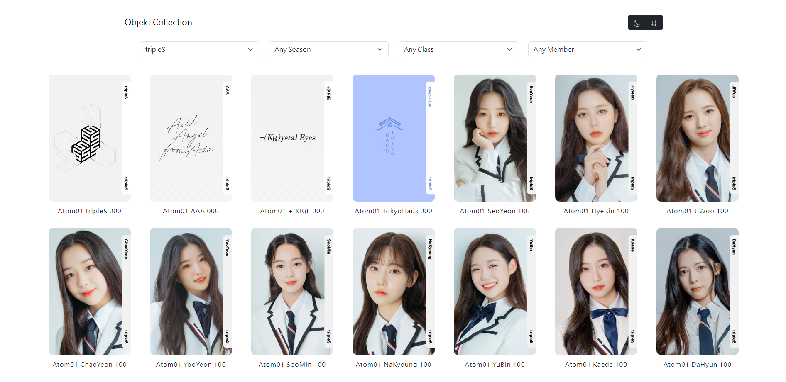

Comets.zip
Comets.zip 開放給世界各地的粉絲免費使用，無須登入即可瀏覽高畫質網路小卡圖鑑，每月平均約有 3,000 位訪客瀏覽。未來預計新增 Wishlist 等功能，讓收藏與追蹤卡片更方便。
開啟作品SELECTED WORK
規劃讓使用者挑選喜歡的小卡圖樣並產生 Wishlist 圖片，減少找圖時間，也能透過社群一起蒐集卡片圖樣。
ABOUT TORRANCE
我喜歡將網頁設計與程式開發結合，從介面細節到實際互動，打造容易理解、順暢好用的使用體驗。
目前的作品包含 Vue 3 網頁應用，以及使用 Adobe XD、Photoshop 完成的 UI 設計練習；也期待在前端開發中持續累積經驗。